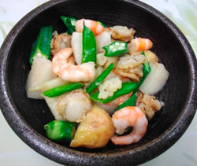

ホタテとエビのアヒージョ風グリル
- 調理時間：20分
- （一人当たり）
- カロリー：418kcal
- たんぱく質：22.6g
- 脂質：26.7g
- 炭水化物：21.1g
- 塩分：1.0g


＜2人分：スキレット1台＞
- ホタテ（ゆで）
- 100g
- エビ（殻付き）
- 8尾
- ジャガイモ
- 1個
- カリフラワー
- 100g
- インゲン
- 2本
- オクラ
- 2本
- 梨
- 1/4個
- ニンニク
- 1片
- 鷹の爪
- 1本
- オリーブオイル
- 適量
- 塩、コショウ
- 少々


- エビは殻をむいて背ワタを除く。
ホタテはペーパータオルで水気を拭きとる。
ジャガイモ、カリフラワーは食べやすい大きさに切る。
インゲン、オクラは半分に切る。 - 梨は一口大に切り、塩水にサッとくぐらせる。
ニンニクは皮をむいて粗めのみじん切りにする。 - 小ぶりの鍋やフライパンに、たっぷりのオリーブオイルをいれ、刻んだニンニクと鷹の爪を入れて、香りが立つまで熱する。
- ①の食材を加え、塩、コショウを振り、さらに加熱する。
しんなりしてきたら火から下ろす。
仕上げに梨を加えて完成。
ホタテとエビのアヒージョ風グリル
猛暑が終わって過ごしやすい日々になったのに何だか疲れる、憂鬱・・・この症状、秋バテが疑われるかもしれません。季節の変化に備えるためにしっかり栄養補給したいものですね。
ホタテは、脾と胃の働きを助けて、各臓器の機能を高めるため滋養強壮や老化防止にはたらくといわれています。さらにタウリンの含有量は魚介類の中ではトップクラス。タウリンは血液中のコレステロールや中性脂肪を減らし、肝機能を高める働きがあるので滋養強壮、フレイル対策になります。低脂肪のたんぱく質をしっかり補充して次の季節に備えましょう。